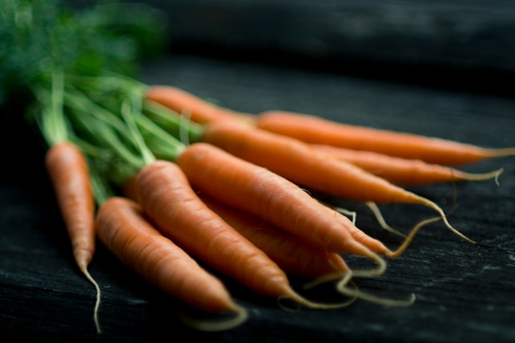

Take Mizu Soba

Short blerb about the restaunant introducing what the experience is like and highlighing why ppl want to eat here.
Made from local buckwheat and handcrafted in our kitchen, these soba noodles are a taste and texture sensetion.

Our in house dipping broth is a bold combination of savory soy sauce and sweet dashi.
Sesame seeds are handprocessed into our most saughtafter sesame oil.

An arrangmet of mushrooms are avalible to give the soba an earthy flavor.

Local wild greens are combined to make a senstional seasonal side salad.
Radishes are local grown and freshly prepared every morning for a flavor sensation
Fresh Carrots that are thinnly sliced and served with white rice vinigar.
A selection of seasonal vegitables that are tempura fried and served with house dipping sauce.
There are a variety of other food options/see fixed menu on menu tab